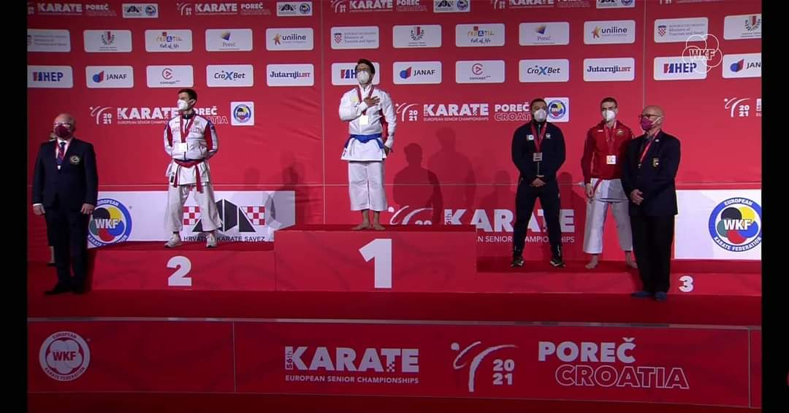
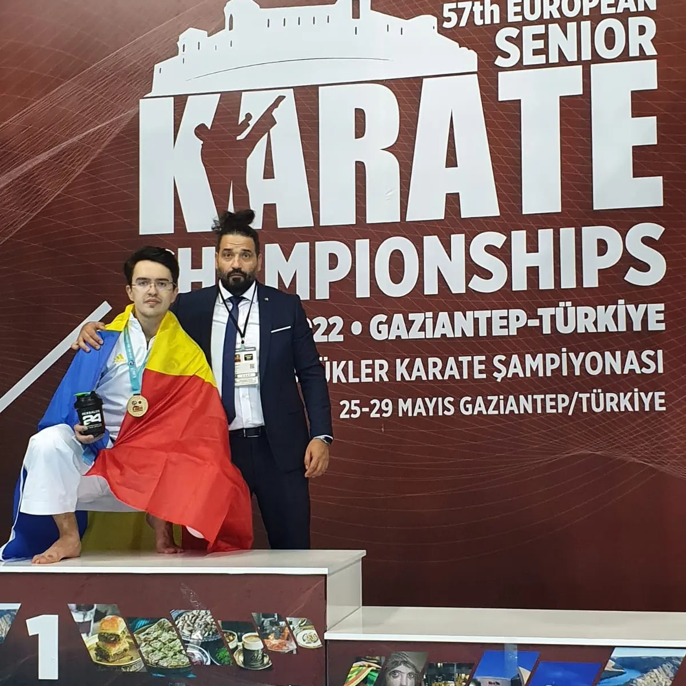
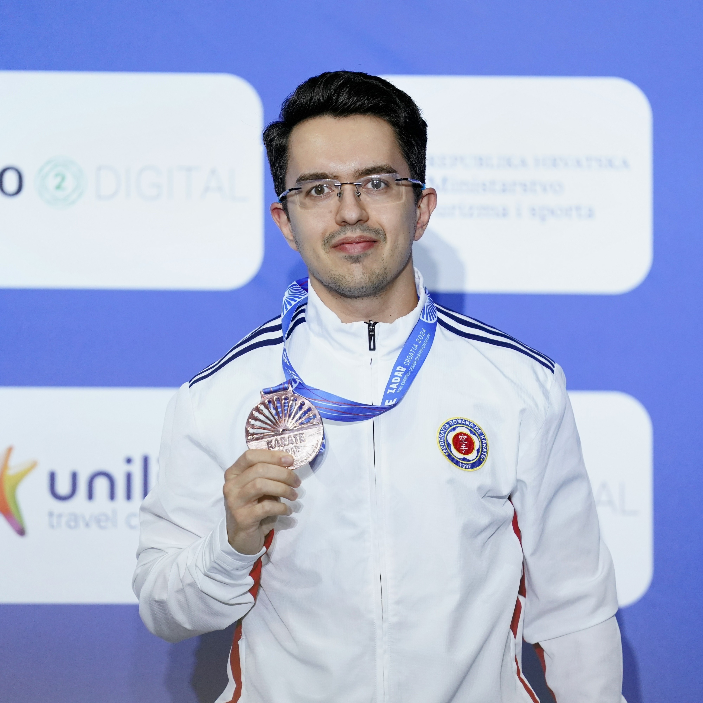
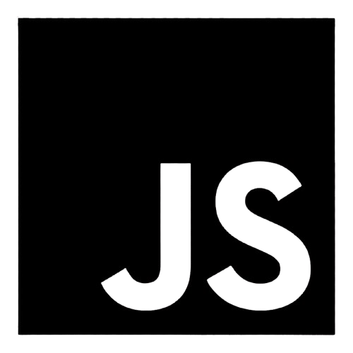
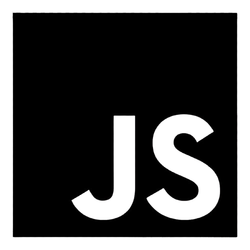
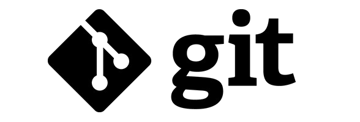
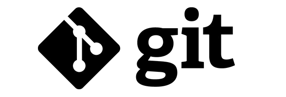

Hello there! My name is Dorin Alexe and I perform multiple activities to enjoy life at its fullest. I am a Dentist since 2021, when I graduated the Faculty of Dental Medicine from "Titu Maiorescu" University of Bucharest, where I also teach in the present.
I am also a Professional Para-Karate Athlete, with numerous medals won during my career. I am really proud of all my achievements in this sport, so far, but there are some that will always have a special place in my heart, namely:
-
WKF World Champion(2021-Dubai, UAE)

-
WKF European Champion(2021-Porec, Croatia)
 -
WKF European Champion(2022-Gaziantep, Turkey)
 -
WKF European Champion(2023-Guadalajara, Spain)

-
WKF European Bronze Medal(2024-Zadar, Croatia)

As if this was not enough, recently I also started coaching in the field of Karate. I started coaching a few kids and so far the results of our work starts to shape up. Hopefully, soon I can help them win some important Karate Competitions
And the cherry on the cake: I started learning how to code on CodeCademy seconds ago.
Click here for a very important piece of information!
I am also a very happy Cat Dad. Meet Puf-Puf & Shuri!


 

 
